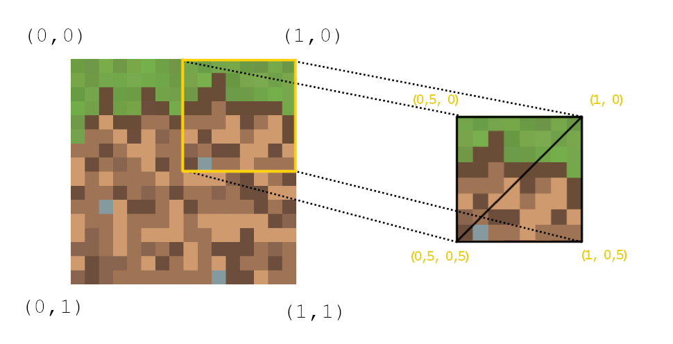

Texture sampling
Engine của chúng ta đã bắt đầu nhìn thực tế rồi, nó sẽ càng thực tế hơn nữa nếu ta bắt đầu thêm cả texture 😳 Nếu bạn không biết thì texture đơn giản chỉ là "hình nằm trên model", là thứ làm cho model của chúng ta không còn 1 màu nữa.Trong ngành CN game, mỗi một texture đều có hệ tọa độ gọi là UV, đơn giản chỉ là hệ tọa độ mà bằng (0; 0) ở góc trái trên và bằng (1; 1) ở góc phải dưới, dù cho hình có là hình chữ nhật hay hình vuông. Cái quan trọng là cách mà ta "áp" được hình đó vào trong model như thế nào, đó gọi là UV mapping, để làm được điều đó, người ta sẽ định nghĩa thêm giá trị UV cho từng đỉnh trong model, để cho hình có thể "áp" được theo ý mình muốn vào trong. Ví dụ hình dưới mình vẽ một hình vuông trong engine có 4 đỉnh có 4 UV như hình, sẽ map ra vùng tương ứng trong texture.


Thế là ngoài màu và worldVertices, ta còn phải lưu thêm UV cho 3 đỉnh tam giác trong class Triangle 😳 Trước đó ta cần tạo một class đại diện cho UV, đi ngược lại những gì mình nói ở blog 9, mình sẽ tạo một class Vector2 😅 Chỉ dùng nó cho UV mà không dùng nó cho pixel (vì quá nhiều), bên trong là u và v thay vì là x và y, thêm luôn hàm nội suy lerp vì ta cũng phải nội suy nó khi tạo các tam giác mới, y hệt như worldVertices.
class Vector2 {
constructor(u = 0, v = 0) {
this.u = u;
this.v = v;
}
clone() {
return new Vector2(this.u, this.v);
}
static lerp(vec1, vec2, t) {
return new Vector2(
vec1.u + (vec2.u - vec1.u) * t,
vec1.v + (vec2.v - vec1.v) * t);
}
}class Triangle {
constructor(vertices = [], uv = [], color = new Color(255, 255, 255)) {
if (vertices.length == 0) {
this.vertices = [];
for (let i = 0; i < 3; i++) {
this.vertices.push(new Vector3(0, 0, 0));
}
} else {
this.vertices = vertices;
}
this.uv = uv; // <---------------------------
this.worldVertices = [this.vertices[0].clone(), this.vertices[1].clone(), this.vertices[2].clone()];
this.color = color;
}
clone() {
let tri = new Triangle();
for (let i = 0; i < this.vertices.length; i++) {
tri.vertices[i] = this.vertices[i].clone();
tri.worldVertices[i] = this.worldVertices[i].clone();
tri.uv[i] = this.uv[i].clone(); // <---------------------------
}
tri.color = this.color;
return tri;
}
...
clipAgainstPlane(plane) {
...
if (frontPoints.length == 3) {
outTris.push(this.clone());
} else if (frontPoints.length == 1 && behindPoints.length == 2) {
let outTri = new Triangle();
...
outTri.vertices[0] = f;
outTri.vertices[1] = intersection1;
outTri.vertices[2] = intersection2;
outTri.worldVertices[0] = this.worldVertices[frontPoints[0]];
outTri.worldVertices[1] = Vector3.lerp(this.worldVertices[frontPoints[0]], this.worldVertices[behindPoints[0]], t1);
outTri.worldVertices[2] = Vector3.lerp(this.worldVertices[frontPoints[0]], this.worldVertices[behindPoints[1]], t2);
outTri.uv[0] = this.uv[frontPoints[0]]; // <---------------------------
outTri.uv[1] = Vector2.lerp(this.uv[frontPoints[0]], this.uv[behindPoints[0]], t1); // <---------------------------
outTri.uv[2] = Vector2.lerp(this.uv[frontPoints[0]], this.uv[behindPoints[1]], t2); // <---------------------------
outTri.color = this.color;
outTris.push(outTri);
} else if (frontPoints.length == 2 && behindPoints.length == 1) {
let outTri1 = new Triangle(), outTri2 = new Triangle();
...
outTri1.vertices[0] = f0;
outTri1.vertices[1] = f1;
outTri1.vertices[2] = intersection1;
outTri1.worldVertices[0] = this.worldVertices[frontPoints[0]];
outTri1.worldVertices[1] = this.worldVertices[frontPoints[1]];
outTri1.worldVertices[2] = Vector3.lerp(this.worldVertices[frontPoints[0]], this.worldVertices[behindPoints[0]], t1);
outTri1.uv[0] = this.uv[frontPoints[0]]; // <---------------------------
outTri1.uv[1] = this.uv[frontPoints[1]]; // <---------------------------
outTri1.uv[2] = Vector2.lerp(this.uv[frontPoints[0]], this.uv[behindPoints[0]], t1); // <---------------------------
outTri1.color = this.color;
outTris.push(outTri1);
outTri2.vertices[0] = f1.clone();
outTri2.vertices[1] = intersection2;
outTri2.vertices[2] = intersection1.clone();
outTri2.worldVertices[0] = this.worldVertices[frontPoints[1]].clone();
outTri2.worldVertices[1] = Vector3.lerp(this.worldVertices[frontPoints[1]], this.worldVertices[behindPoints[0]], t2);
outTri2.worldVertices[2] = Vector3.lerp(this.worldVertices[frontPoints[0]], this.worldVertices[behindPoints[0]], t1);
outTri2.uv[0] = this.uv[frontPoints[1]].clone(); // <---------------------------
outTri2.uv[1] = Vector2.lerp(this.uv[frontPoints[1]], this.uv[behindPoints[0]], t2); // <---------------------------
outTri2.uv[2] = Vector2.lerp(this.uv[frontPoints[0]], this.uv[behindPoints[0]], t1); // <---------------------------
outTri2.color = this.color;
outTris.push(outTri2);
}
return outTris;
}
...
}generateInitialTriangles() {
// FRONT (mặt mà mình xài để ví dụ)
this.tris.push(new Triangle([
new Vector3(-0.5, -0.5, -0.5),
new Vector3(-0.5, 0.5, -0.5),
new Vector3(0.5, 0.5, -0.5)],
[new Vector2(0, 0), new Vector2(0, 1), new Vector2(1, 1)], this.color));
this.tris.push(new Triangle([
new Vector3(-0.5, -0.5, -0.5),
new Vector3(0.5, 0.5, -0.5),
new Vector3(0.5, -0.5, -0.5)],
[new Vector2(0, 0), new Vector2(1, 1), new Vector2(1, 0)], this.color));
// RIGHT
this.tris.push(new Triangle([
new Vector3(0.5, -0.5, -0.5),
new Vector3(0.5, 0.5, -0.5),
new Vector3(0.5, 0.5, 0.5)],
[new Vector2(0, 0), new Vector2(1, 0), new Vector2(1, 1)], this.color));
this.tris.push(new Triangle([
new Vector3(0.5, -0.5, -0.5),
new Vector3(0.5, 0.5, 0.5),
new Vector3(0.5, -0.5, 0.5)],
[new Vector2(0, 0), new Vector2(1, 1), new Vector2(0, 1)], this.color));
// BACK
this.tris.push(new Triangle([
new Vector3(0.5, -0.5, 0.5),
new Vector3(0.5, 0.5, 0.5),
new Vector3(-0.5, 0.5, 0.5)],
[new Vector2(1, 0), new Vector2(1, 1), new Vector2(0, 1)], this.color));
this.tris.push(new Triangle([
new Vector3(0.5, -0.5, 0.5),
new Vector3(-0.5, 0.5, 0.5),
new Vector3(-0.5, -0.5, 0.5)],
[new Vector2(1, 0), new Vector2(0, 1), new Vector2(0, 0)], this.color));
// LEFT
this.tris.push(new Triangle([
new Vector3(-0.5, -0.5, 0.5),
new Vector3(-0.5, 0.5, 0.5),
new Vector3(-0.5, 0.5, -0.5)],
[new Vector2(0, 1), new Vector2(1, 1), new Vector2(1, 0)], this.color));
this.tris.push(new Triangle([
new Vector3(-0.5, -0.5, 0.5),
new Vector3(-0.5, 0.5, -0.5),
new Vector3(-0.5, -0.5, -0.5)],
[new Vector2(0, 1), new Vector2(1, 0), new Vector2(0, 0)], this.color));
// TOP
this.tris.push(new Triangle([
new Vector3(-0.5, 0.5, -0.5),
new Vector3(-0.5, 0.5, 0.5),
new Vector3(0.5, 0.5, 0.5)],
[new Vector2(0, 0), new Vector2(0, 1), new Vector2(1, 1)], this.color));
this.tris.push(new Triangle([
new Vector3(-0.5, 0.5, -0.5),
new Vector3(0.5, 0.5, 0.5),
new Vector3(0.5, 0.5, -0.5)],
[new Vector2(0, 0), new Vector2(1, 1), new Vector2(1, 0)], this.color));
// BOTTOM
this.tris.push(new Triangle([
new Vector3(0.5, -0.5, 0.5),
new Vector3(-0.5, -0.5, 0.5),
new Vector3(-0.5, -0.5, -0.5)],
[new Vector2(1, 1), new Vector2(0, 1), new Vector2(0, 0)], this.color));
this.tris.push(new Triangle([
new Vector3(0.5, -0.5, 0.5),
new Vector3(-0.5, -0.5, -0.5),
new Vector3(0.5, -0.5, -0.5)],
[new Vector2(1, 1), new Vector2(0, 0), new Vector2(1, 0)], this.color));
}Thay vào đó, ta sẽ lấy hình từ chính github repo của chính trang blog này của mình 😳 khi mình push 1 hình lên, lên github tìm lại hình đó, và bấm "Open image in new tab", cái tab mới của nó sẽ có url "raw" mà bạn có thể dùng để load luôn hình đó mà không bị hệ lụy gì, đối với blog này mình sẽ dùng hình này: https://raw.githubusercontent.com/hachihao792001/hachihao792001.github.io/refs/heads/main/blogs/graphics3D/images/textures/brick.jpg
{kind=link}
Vì thứ chúng ta cần là thông tin màu của tất cả pixel của image, nên sau khi load được image, ta phải vẽ nó vào 1 canvas tạm, sau đó dùng getImageData để lấy ImageData của canvas đó. Ngoài ra vì download một thứ gì đó cần phải đợi, thay vì await async gì đó cho phức tạp, ta chỉ check mỗi frame xem ImageData đã được load chưa, nếu chưa thì vẽ như 1 màu như trước, còn load rồi ta mới xài ImageData để vẽ. Như vậy đoạn code load hình như sau:
const img = new Image();
img.crossOrigin = "anonymous"; // cần cái này, nếu không có cái này thì image vẫn load được nhưng vẽ lên canvas tạm rồi thì sẽ không lấy được image data
img.src = "https://raw.githubusercontent.com/hachihao792001/hachihao792001.github.io/refs/heads/main/blogs/graphics3D/images/textures/brick.jpg";
img.onload = () => {
const tempCanvas = document.createElement("canvas"); //tạo canvas tạm với kích thước giống hình
tempCanvas.width = img.width;
tempCanvas.height = img.height;
const tempCtx = tempCanvas.getContext("2d");
tempCtx.drawImage(img, 0, 0); // vẽ hình lên canvas tạm
imgPixels = tempCtx.getImageData(0, 0, img.width, img.height).data; // lấy imageData
};
let imgPixels = null;processTriangles(tris) {
for (let tri of tris) {
...
const bbox = tri.boundingBox();
for (let y = bbox[2]; y <= bbox[3]; y++) {
for (let x = bbox[0]; x <= bbox[1]; x++) {
if (tri.isPointInTriangle([x, y])) {
const baryCoords = tri.barycentricCoords([x, y]);
const z = tri.vertices[0].z * baryCoords[0] + tri.vertices[1].z * baryCoords[1] + tri.vertices[2].z * baryCoords[2];
if (z < this.depthBuffer[y][x]) {
...
let texColor = tri.color;
if (imgPixels != null) { // load xong hình rồi mới vào đây tính màu pixel theo hình, còn không thì vẫn dùng màu của tam giác
// lấy UV bằng baryCoords như depth và worldVertices
let pixelUV = new Vector2(
tri.uv[0].u * baryCoords[0] + tri.uv[1].u * baryCoords[1] + tri.uv[2].u * baryCoords[2],
tri.uv[0].v * baryCoords[0] + tri.uv[1].v * baryCoords[1] + tri.uv[2].v * baryCoords[2]
);
// vì UV nằm trong khoảng [0; 1], nên nhân lên với kích thước hình
const texX = Math.floor(pixelUV.u * (img.width - 1));
const texY = Math.floor(pixelUV.v * (img.height - 1));
// vì imageData là mảng 1 chiều, nên ta phải tính index của pixel mà ta muốn lấy trong hình
const texIndex = (texY * img.width + texX) * 4;
// lấy RGB của pixel tương ứng (không cần lấy alpha nên không có texIndex + 3)
texColor = new Color(imgPixels[texIndex], imgPixels[texIndex + 1], imgPixels[texIndex + 2]);
}
this.placePixel([x, y], new Color(
Math.min(255, texColor.r * lightIntensity),
Math.min(255, texColor.g * lightIntensity),
Math.min(255, texColor.b * lightIntensity)
));
}
}
}
}
}
} Nguồn ảnh: Reddit, Game: Tomb Raider II.
Nguồn ảnh: Reddit, Game: Tomb Raider II.
Ta biết rằng vertices phải trải qua projection matrix và perspective divide mới lên được màn hình, thì suy ra UV cũng phải trải qua thứ tương tự (tuy nhiên UV thì không cần trải qua projection matrix vì nó dính liền với vertices). Người ta gọi cái này là Perspective Correction. Tới công đoạn rasterizer, sau khi đã nội suy được perspective UV của pixel hiện tại, ta nhân lại z mà ta đã dùng để perspective divide trước đó để nó tuyến tính trở lại. Vì vậy nên ta phải có cách nào đó để giữ lại được cái "z" đó cho tới rasterizer, cách người ta hay làm là cũng thêm một giá trị w cho UV (Vector2), ban đầu nó = 1, khi perspective divide thì nó sẽ = 1/z, giữ nó cho tới rasterizer thì "nhân z" cũng giống như "chia 1/z" 😳.
Cũng như Vector3, ta cũng thêm một giá trị w cho Vector2 (UV), đồng thời thêm hàm div để chia (nhớ là phải chia luôn w), lerp cũng phải lerp luôn w:
class Vector2 {
constructor(u = 0, v = 0, w = 1) {
this.u = u;
this.v = v;
this.w = w;
}
clone() {
return new Vector2(this.u, this.v, this.w);
}
static div(vec, value) {
return new Vector2(vec.u / value, vec.v / value, vec.w / value);
}
static lerp(vec1, vec2, t) {
return new Vector2(
vec1.u + (vec2.u - vec1.u) * t,
vec1.v + (vec2.v - vec1.v) * t,
vec1.w + (vec2.w - vec1.w) * t);
}
}perspectiveDivide() {
for (let i = 0; i < this.vertices.length; i++) {
let z = this.vertices[i].w;
this.vertices[i] = Vector3.div(this.vertices[i], z);
this.uv[i] = Vector2.div(this.uv[i], z);
}
}if (imgPixels != null) {
let pixelUV = new Vector2(
tri.uv[0].u * baryCoords[0] + tri.uv[1].u * baryCoords[1] + tri.uv[2].u * baryCoords[2],
tri.uv[0].v * baryCoords[0] + tri.uv[1].v * baryCoords[1] + tri.uv[2].v * baryCoords[2],
tri.uv[0].w * baryCoords[0] + tri.uv[1].w * baryCoords[1] + tri.uv[2].w * baryCoords[2] // tính luôn giá trị w của UV của pixel hiện tại
);
pixelUV = Vector2.div(pixelUV, pixelUV.w); // chia 1/z = nhân z để nó tuyến tính trở lại
const texX = Math.floor(pixelUV.u * (img.width - 1));
const texY = Math.floor(pixelUV.v * (img.height - 1));
const texIndex = (texY * img.width + texX) * 4;
texColor = new Color(imgPixels[texIndex], imgPixels[texIndex + 1], imgPixels[texIndex + 2]);
}Nếu bạn quay lại blog trước và xem demo cuối cùng (hoặc demo trên cũng được), bạn sẽ thấy rằng ánh sáng mà point light chiếu lên cube2 cũng bị hiện tượng tương tự Affine Texture Mapping ở trên, bạn di chuyển camera qua lại nó cũng biến đổi theo. Đó là vì worldVertices cũng phải được "perspective correct", ta đang nội suy các tọa độ 3D một cách tuyến tính trên màn hình 2D, very wrong.
Cách sửa cũng tương tự, nhưng thay vì cũng thêm w cho worldVertices thì ta xài luôn 1/z mà ta đã giữ sẵn trong UV 😅 trước khi nội suy worldVertices thì cũng chia cho z (nhân w) trước, rồi nội suy, nội suy xong ta chia lại cho w (nhân z) là ô kê 😳
Vì ta sử dụng 1/z 2 lần, nên mình gom nó lên trên thành biến pixelInvZ luôn:
if (z < this.depthBuffer[y][x]) {
this.depthBuffer[y][x] = z;
// tính 1/z của pixel hiện tại để xài chung cho cả worldVertices và UV
let pixelInvZ = tri.uv[0].w * baryCoords[0] + tri.uv[1].w * baryCoords[1] + tri.uv[2].w * baryCoords[2];
// perspective divide cho world vertices bằng cách chia z (nhân w)
let perspectiveWorldVertices = [
Vector3.mul(tri.worldVertices[0], tri.uv[0].w),
Vector3.mul(tri.worldVertices[1], tri.uv[1].w),
Vector3.mul(tri.worldVertices[2], tri.uv[2].w)
];
// nội suy xong rồi nhân lại z (chia w)
let pixelWorldPos = new Vector3(
(perspectiveWorldVertices[0].x * baryCoords[0] + perspectiveWorldVertices[1].x * baryCoords[1] + perspectiveWorldVertices[2].x * baryCoords[2]),
(perspectiveWorldVertices[0].y * baryCoords[0] + perspectiveWorldVertices[1].y * baryCoords[1] + perspectiveWorldVertices[2].y * baryCoords[2]),
(perspectiveWorldVertices[0].z * baryCoords[0] + perspectiveWorldVertices[1].z * baryCoords[1] + perspectiveWorldVertices[2].z * baryCoords[2])
);
pixelWorldPos = Vector3.div(pixelWorldPos, pixelInvZ);
...
if (imgPixels != null) {
let pixelUV = new Vector2(
tri.uv[0].u * baryCoords[0] + tri.uv[1].u * baryCoords[1] + tri.uv[2].u * baryCoords[2],
tri.uv[0].v * baryCoords[0] + tri.uv[1].v * baryCoords[1] + tri.uv[2].v * baryCoords[2],
pixelInvZ // xài lại thay vì tính lại
);
...
}
...
}Kết quả cuối cùng: